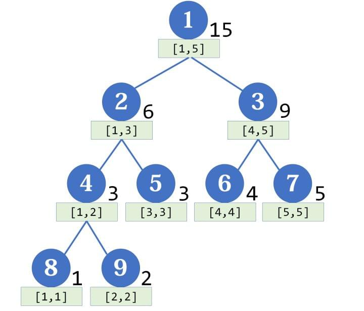
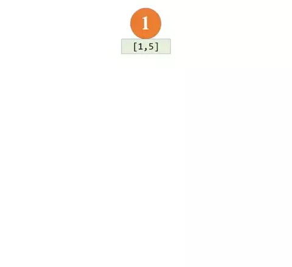
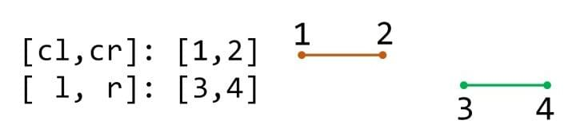
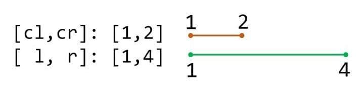
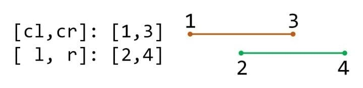
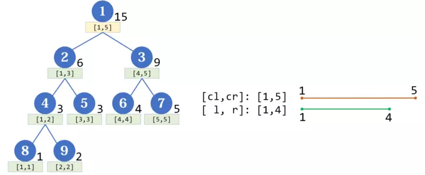

线段树¶
本文在原作者 Pecco 授权下转载于 知乎专栏 - 算法学习笔记 (14): 线段树。有部分删改。
线段树（Segment Tree）几乎是算法竞赛最常用的数据结构了，它主要用于维护区间信息（要求满足结合律）。与树状数组相比，它可以实现 \(O(\log n)\) 的区间修改，还可以同时支持多种操作（加、乘），更具通用性。
接下来我们用这道模板题为例，看看线段树是怎么维护区间和这一信息的。
线段树的建立¶
线段树是一棵平衡二叉树。母结点代表整个区间的和，越往下区间越小。注意，线段树的每个结点都对应一条线段（区间），但并不保证所有的线段（区间）都是线段树的结点，这两者应当区分开。
如果有一个数组 {1, 2, 3, 4, 5}，那么它对应的线段树大概长这个样子：

每个结点 \(p\) 的左右子结点的编号分别为 \(2p\) 和 \(2p+1\)，假如结点 \(p\) 储存区间 \([a, b]\) 的和，设 \(mid = \left\lfloor\frac{l+r}{2}\right\rfloor\)，那么两个子结点分别储存 \([l, mid]\) 和 \([mid+1, r]\) 的和。可以发现，左结点对应的区间长度，与右结点相同或者比之恰好多 1。
如何从数组建立一棵线段树？我们可以考虑递归地进行。
void build(ll l = 1, ll r = n, ll p = 1)
{
if (l == r) // 到达叶子结点
tree[p] = A[l]; // 用数组中的数据赋值
else
{
ll mid = (l + r) / 2;
build(l, mid, p * 2); // 先建立左右子结点
build(mid + 1, r, p * 2 + 1);
tree[p] = tree[p * 2] + tree[p * 2 + 1]; // 该结点的值等于左右子结点之和
}
}
这里用一张 gif 展现上述的过程：

区间修改¶
在讲区间修改前，要先引入一个“懒标记”（或延迟标记）的概念。懒标记是线段树的精髓所在。对于区间修改，朴素的想法是用递归的方式一层层修改（类似于线段树的建立），但这样的时间复杂度比较高。使用懒标记后，对于那些正好是线段树结点的区间，我们不继续递归下去，而是打上一个标记，将来要用到它的子区间的时候，再向下传递。
代码比较复杂，我慢慢解释：
void update(ll l, ll r, ll d, ll p = 1, ll cl = 1, ll cr = n)
{
if (cl > r || cr < l) // 区间无交集
return; // 剪枝
else if (cl >= l && cr <= r) // 当前结点对应的区间包含在目标区间中
{
tree[p] += (cr - cl + 1) * d; // 更新当前区间的值
if (cr > cl) // 如果不是叶子结点
lazy[p] += d; // 给当前区间打上标记
}
else // 与目标区间有交集，但不包含于其中
{
ll mid = (cl + cr) / 2;
lazy[p * 2] += lazy[p]; // 标记向下传递
lazy[p * 2 + 1] += lazy[p];
tree[p * 2] += lazy[p] * (mid - cl + 1); // 往下更新一层
tree[p * 2 + 1] += lazy[p] * (cr - mid);
lazy[p] = 0; // 清除标记
update(l, r, d, p * 2, cl, mid); // 递归地往下寻找
update(l, r, d, p * 2 + 1, mid + 1, cr);
tree[p] = tree[p * 2] + tree[p * 2 + 1]; // 根据子结点更新当前结点的值
}
}
更新时，我们是从最大的区间开始，递归向下处理。注意到，任何区间都是线段树上某些结点的并集。于是我们记目标区间为 \([l, r]\)，当前区间为 \([cl, cr]\)， 当前结点为 \(p\) ，我们会遇到三种情况：
1. 当前区间与目标区间没有交集：

这时直接结束递归。
2. 当前区间被包括在目标区间里：

这时可以更新当前区间，别忘了乘上区间长度：
tree[p] += (cr - cl + 1) * d;
然后打上懒标记（叶子结点可以不打标记，因为不会再向下传递了）：
lazy[p] += d;
这个标记表示“该区间上每一个点都要加上 \(d\)”。因为原来可能存在标记，所以是 += 而不是 =。
3. 当前区间与目标区间相交，但不包含于其中：

这时把当前区间一分为二，分别进行处理。如果存在懒标记，要先把懒标记传递给子结点（注意也是 +=，因为原来可能存在懒标记）：
ll mid = (cl + cr) / 2;
lazy[p * 2] += lazy[p];
lazy[p * 2 + 1] += lazy[p];
两个子结点的值也就需要相应的更新（后面乘的是区间长度）：
tree[p * 2] += lazy[p] * (mid - cl + 1);
tree[p * 2 + 1] += lazy[p] * (cr - mid);
不要忘记清除该结点的懒标记：
lazy[p] = 0;
这个过程并不是递归的，我们只往下传递一层（所以叫“懒”标记啊！），以后要用再才继续传递。其实我们常常把这个传递过程封装成一个函数：
inline void push_down(ll p, ll len)
{
lazy[p * 2] += lazy[p];
lazy[p * 2 + 1] += lazy[p];
tree[p * 2] += lazy[p] * (len - len / 2);
tree[p * 2 + 1] += lazy[p] * (len / 2); // 右边的区间可能要短一点
lazy[p] = 0;
}
然后在 update 函数中这样调用：
push_down(p, cr - cl + 1);
传递完标记后，再递归地去处理左右两个子结点。
下面的 gif 显示了为区间 \([1, 4]\) 加上 \(1\) 的过程：

至于单点修改，只需要令左右端点相等即可。
区间查询¶
有了区间修改的经验，区间查询的方法完全类似，直接上代码了：
ll query(ll l, ll r, ll p = 1, ll cl = 1, ll cr = n)
{
if (cl > r || cr < l)
return 0;
else if (cl >= l && cr <= r)
return tree[p];
else
{
ll mid = (cl + cr) / 2;
push_down(p, cr - cl + 1);
return query(l, r, p * 2, cl, mid) + query(l, r, p * 2 + 1, mid + 1, cr);
// 上一行拆成三行写就和区间修改格式一致了
}
}
一样的递归，一样自顶至底地寻找，一样的合并信息。
本文只介绍了最基本的线段树用法，其实线段树的题目千奇百怪，有很多技巧。在维护不同的信息时，需要注意是否需要乘区间长度、不同的标记之间是否相互影响等。